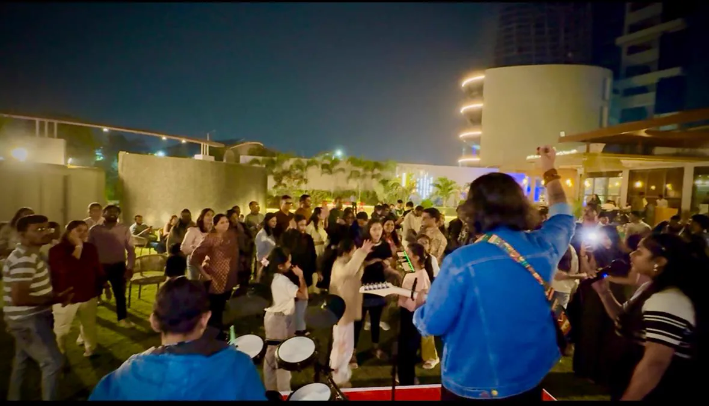

Live Band for Corporate Events in Ahmedabad
Corporate events are available as a booking occasion. Share the date, venue location and event details through the enquiry form so the band can review the request.
Ahmedabad, Gujarat
Aniket Patel & Band performs Bollywood classics, retro favourites, Sufi, Ghazal, unplugged and contemporary music for weddings, corporate events and celebrations across Gujarat.
Weddings & Celebrations
Choose live music that follows the mood of the occasion, from a soulful welcome to an energetic celebration.
The listed repertoire includes evergreen romantic songs, Golden Era Bollywood, retro classics, Bollywood unplugged, Sufi, Ghazal, peppy numbers and contemporary favourites.
Explore wedding and event performancesRepertoire
The Golden Era remains central to the band's music, with classics associated with Kishore Kumar, Mohammed Rafi, Mukesh and other iconic voices. The repertoire also moves naturally into romantic songs, unplugged arrangements and contemporary favourites.
View the complete music repertoireCorporate events are available as a booking occasion. Share the date, venue location and event details through the enquiry form so the band can review the request.
Sufi and Ghazal are part of the confirmed repertoire, alongside soulful melodies and Bollywood unplugged performances.
Bookings are available for private parties, birthdays, anniversaries, housewarming ceremonies, cultural events and special celebrations.
On Stage
See real performance clips, stage moments and photographs already published on the official website.

Booking Guide
Use the booking enquiry form to choose an available date and share your wedding details, location and contact information. Aniket Patel & Band reviews the enquiry before confirming the booking.
Yes. Corporate Events is one of the event types available in the booking form.
Yes. The repertoire includes Golden Era Bollywood and retro classics, including songs associated with Kishore Kumar, Mohammed Rafi and Mukesh.
Sufi and Ghazal music are both included in the listed repertoire. Share your preferred mood and occasion in the booking enquiry.
Yes. Birthdays and anniversaries are both listed among the celebrations served by Aniket Patel & Band.
Open the booking enquiry form and use its availability calendar. Only dates shown as available can be requested.
Submit the booking enquiry form, call or WhatsApp +91 88665 66520, or email patelaniket3028@gmail.com.
Ahmedabad & Gujarat
Check the event calendar and send the band your occasion, date and location.
Book A Live Performance